Младшая группа (код: М-11 -- два задания на выбор, можно оба)
Программное обеспечение: Google Blockly и Алиса ИИ
Цель: 1. выполнить уровни с Птицей (с 1 по 4 включительно) и Рисованием (с 1 по 3 включительно) -- награда: 10 киберонов
2. написать промпт (запрос), получить ответ, менять результат -- награда: 5 киберонов.
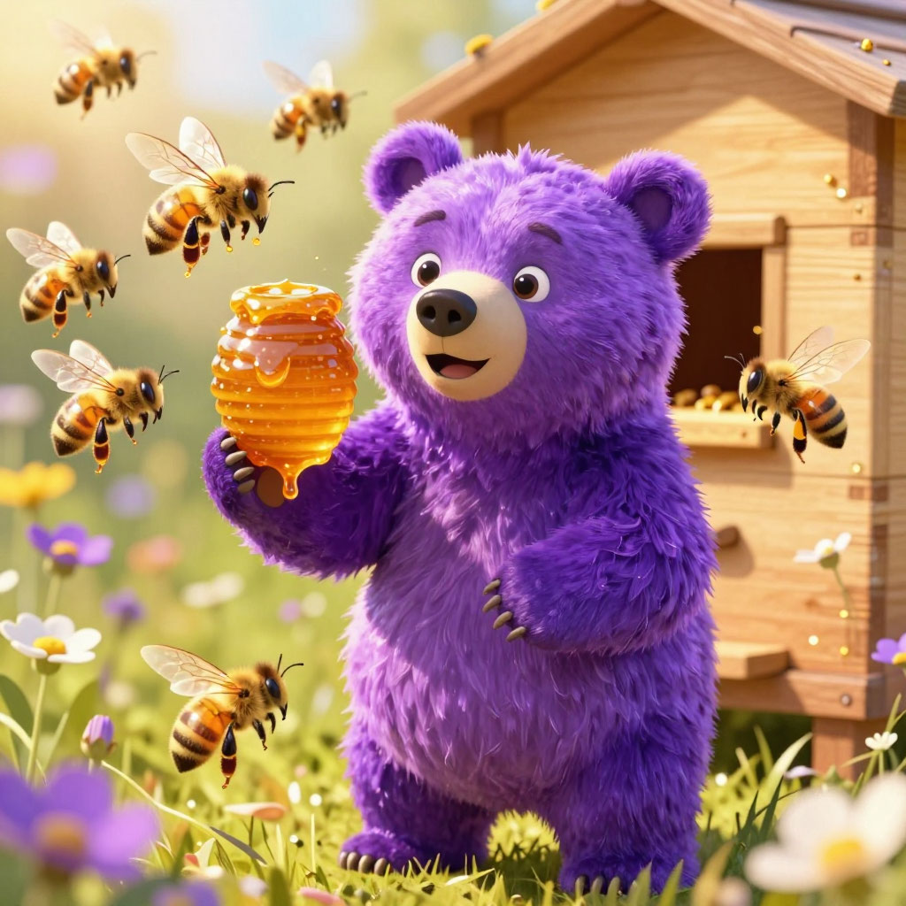
Учебная цель: научиться писать промпты, чтобы составлять историю.
Задачи:
- Войди в аккаунт Яндекса, чтобы пообщаться с Алисой, или попроси доступ к аккаунту родителя
- В чате напиши: "Нарисуй картинку по истории:"... и дальше пиши, что хочешь нарисовать. Пример результата:
-
Напиши то, что хочешь нарисовать -- и дождись результата:
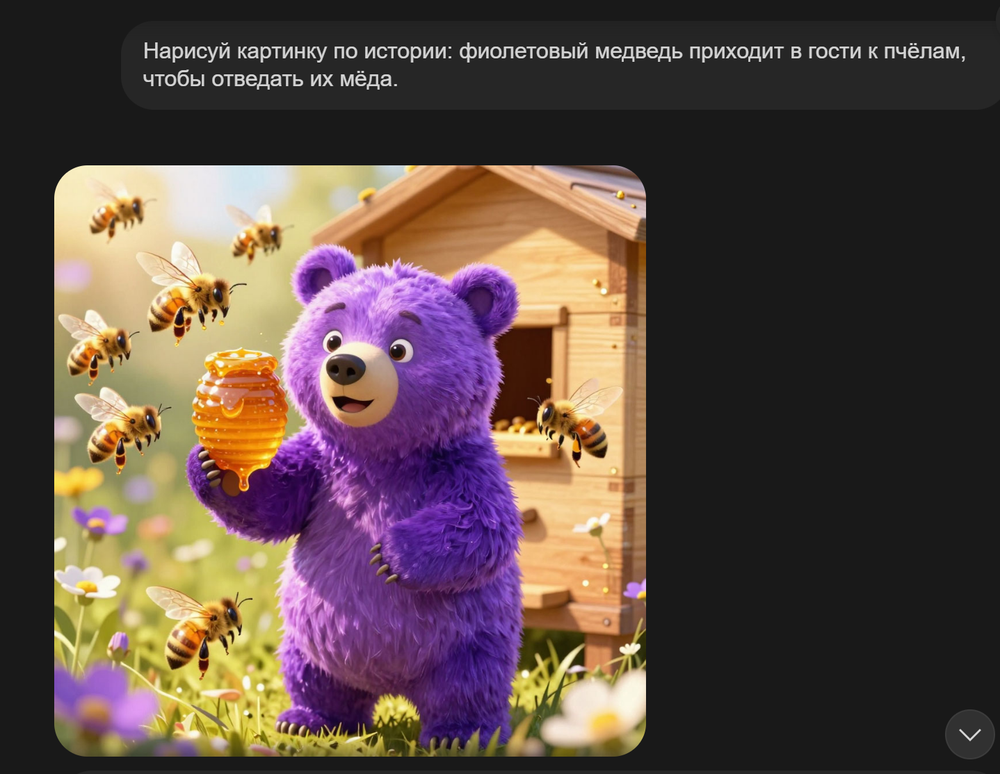
-
Придумай, как изменить историю и у нейросети запроси изменить картинку, вплетая новые детали истории -- и дождись результата (Алиса может долго думать -- вплоть до 3-ёх минут). Пример:
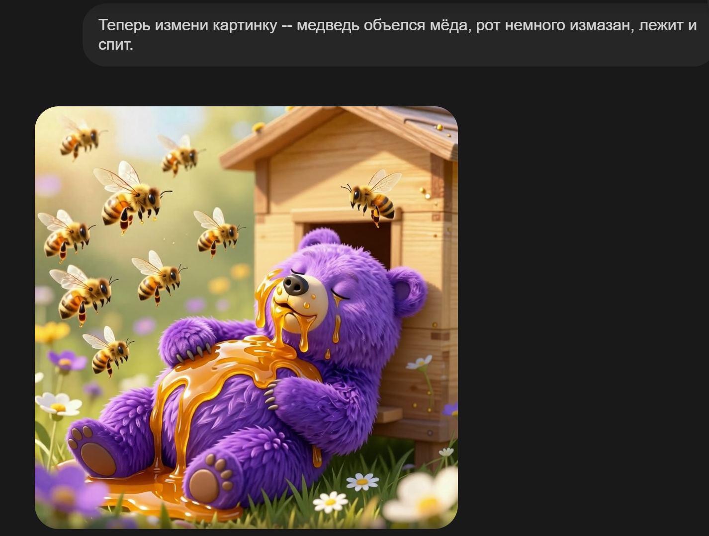
{kind=link}
{kind=link}
Подсказки:
Вот ещё пример такого общения с Алисой: 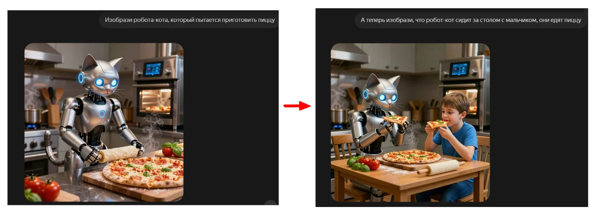
{kind=link}
Доказательство выполненного д/з: скриншот / устное объяснение, как сделал и что увидел.
Прошлое д/з (код: М-10)
Программное обеспечение: Google Blockly и Алиса ИИ
Цель: 1. вывести персонажа из лабиринта в уровнях с 1 по 8 включительно -- награда: 10 киберонов
2. написать промпт (запрос), получить ответ, менять результат -- награда: 5 киберонов.
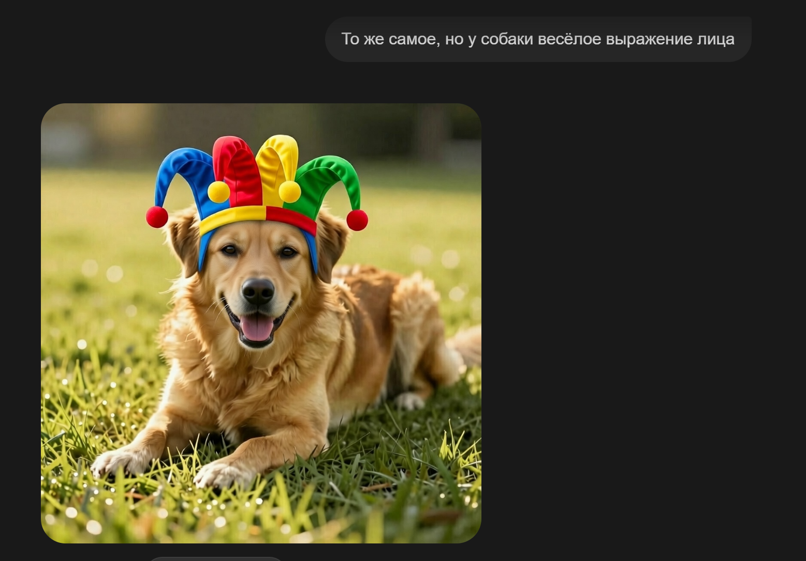
Учебная цель: вспомнить, как писать промпты.
Задачи:
- Войди в аккаунт Яндекса, чтобы пообщаться с Алисой, или попроси доступ к аккаунту родителя
- Напиши слово "Нарисуй"
-
Напиши то, что хочешь нарисовать -- и дождись результата:
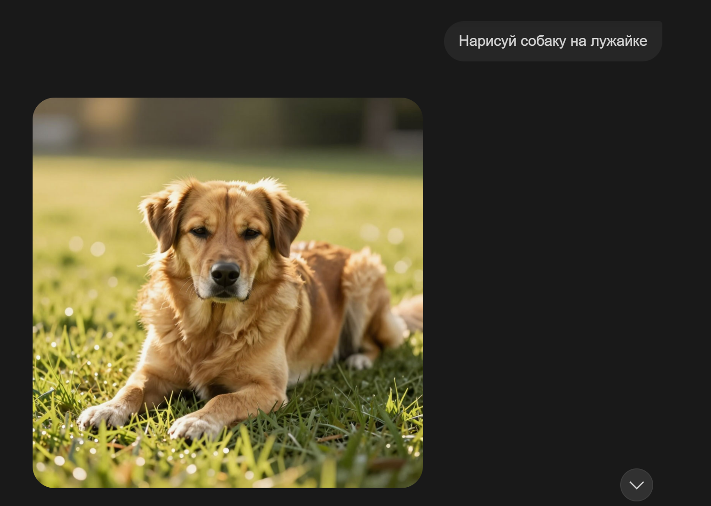
-
Напиши то, как хочешь изменить картинку -- и дождись результата (Алиса может долго думать -- вплоть до 3-ёх минут):
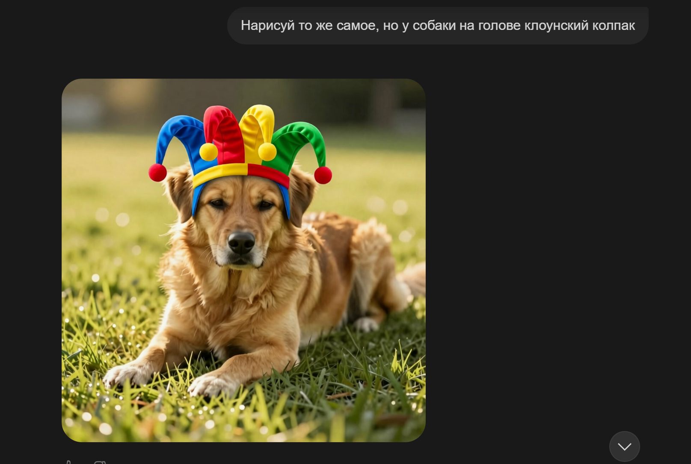
-
Напиши то, как хочешь изменить картинку ещё раз -- и дождись результата (в этом случае, скорее всего, Алиса будет думать ещё дольше -- вплоть до 5-7 минут):
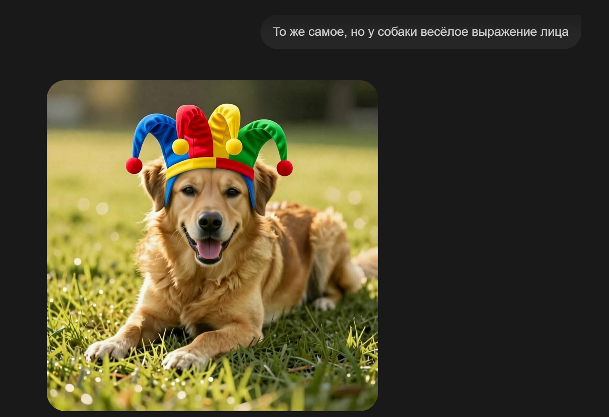
{kind=link}
{kind=link}
{kind=link}
Доказательство выполненного д/з: скриншот / устное объяснение, как сделал и что увидел.
Прошлое д/з (код: М-9)
Программное обеспечение: Алиса ИИ
Цель: написать промпт (запрос) в нейросеть и получить ответ.
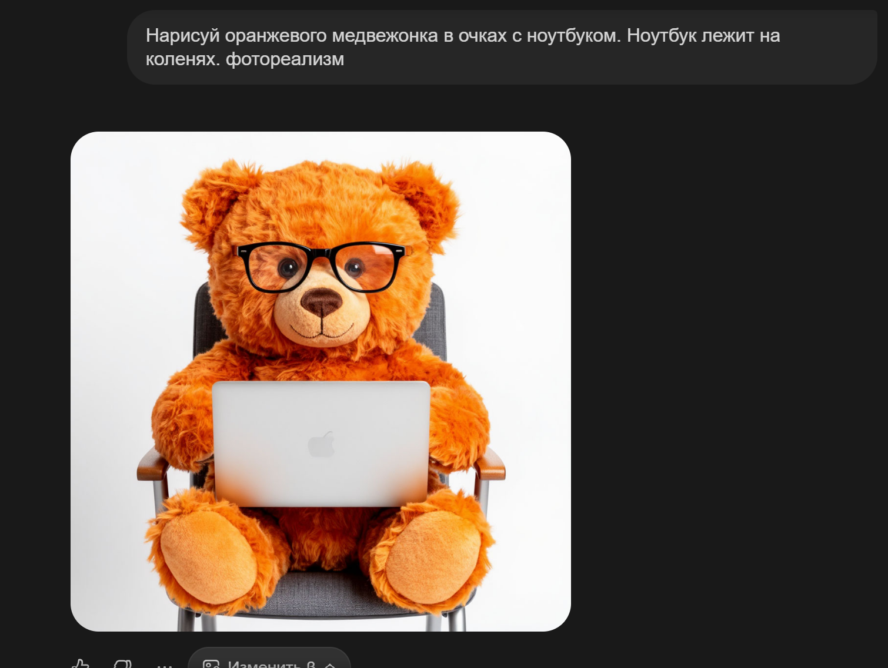
Учебная цель: вспомнить, как писать промпты.
Задачи:
- Войди в аккаунт Яндекса, чтобы пообщаться с Алисой, или попроси доступ к аккаунту родителя
- Напиши слово "Нарисуй"
- Напиши то, что хочешь нарисовать
- Выбери стиль рисунка через кнопку "Стиль"
Подсказки:
- Ответ от Алисы может идти долго - вплоть до 4-5 минут
Доказательство выполненного д/з: скриншот / устное объяснение, как сделал и что увидел.
Прошлое д/з (код: М-8)
Программное обеспечение: Kodu Game Lab
Цель: сделать демонстрацию (демо) игры – стрелялку.
Учебная цель: вспомнить, как создавать объекты и их программировать.
Цель игры: отстреливаться от противников, которые идут на нас. Камера - от первого лица. Противники появляются в случайное время.
Подсказки:
-
В качестве игрока можно использовать объект "Задвижка":
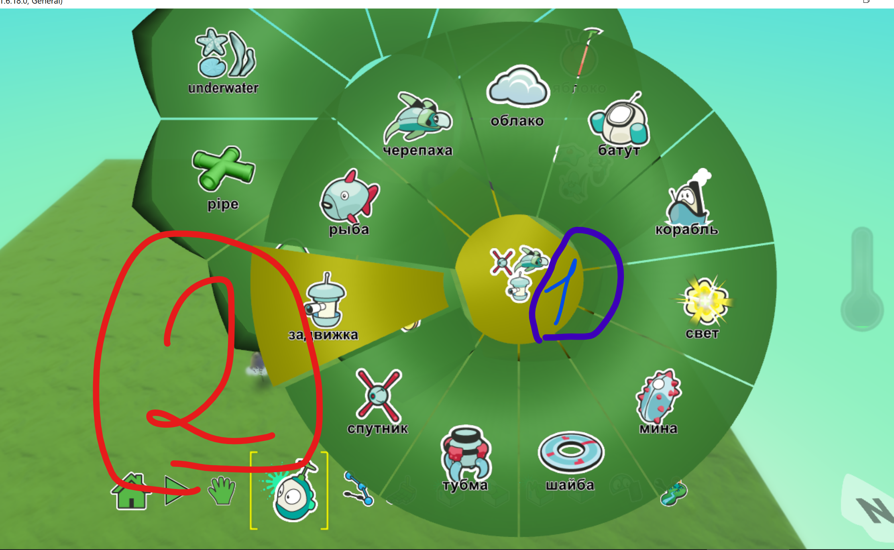
-
не забывай, что можно повернуть объект:
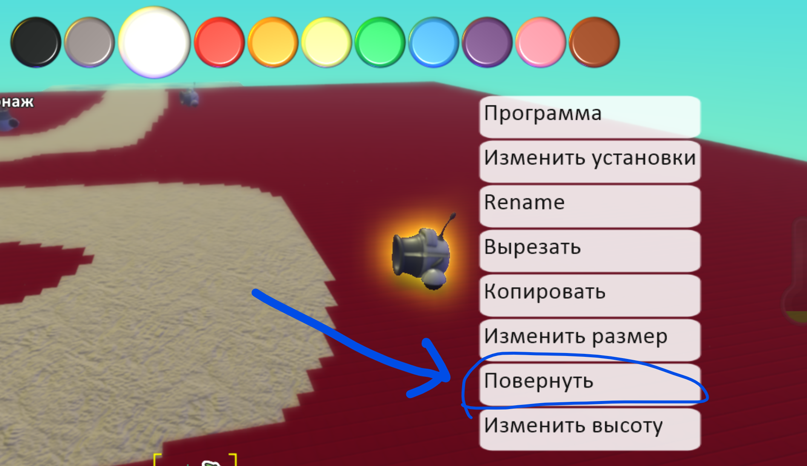
- Для камеры от 1-го лица надо использовать в меню "Видеть" — "1 игрок"
Доказательство выполненного д/з: видео / скриншот игры / устное объяснение, как сделал.
Прошлое д/з (код: М-7)
Программное обеспечение: Kodu Game Lab
Цель: сделать демонстрацию (демо) игры – гонку.
Учебная цель: вспомнить, как создавать объекты и их программировать.
Задачи:
- создать ландшафт с лавой
- создать байкера
- запрограммировать возможность им управлять; урон при наезде на лаву; финиш и выигрыш
-
создать и запрограммировать пушки, которые стреляют ракетами; вот где взять Пушку:
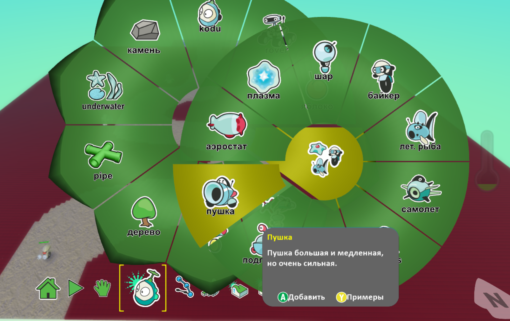
Подсказки:
-
предлагаю выбрать такую скорость байкера:
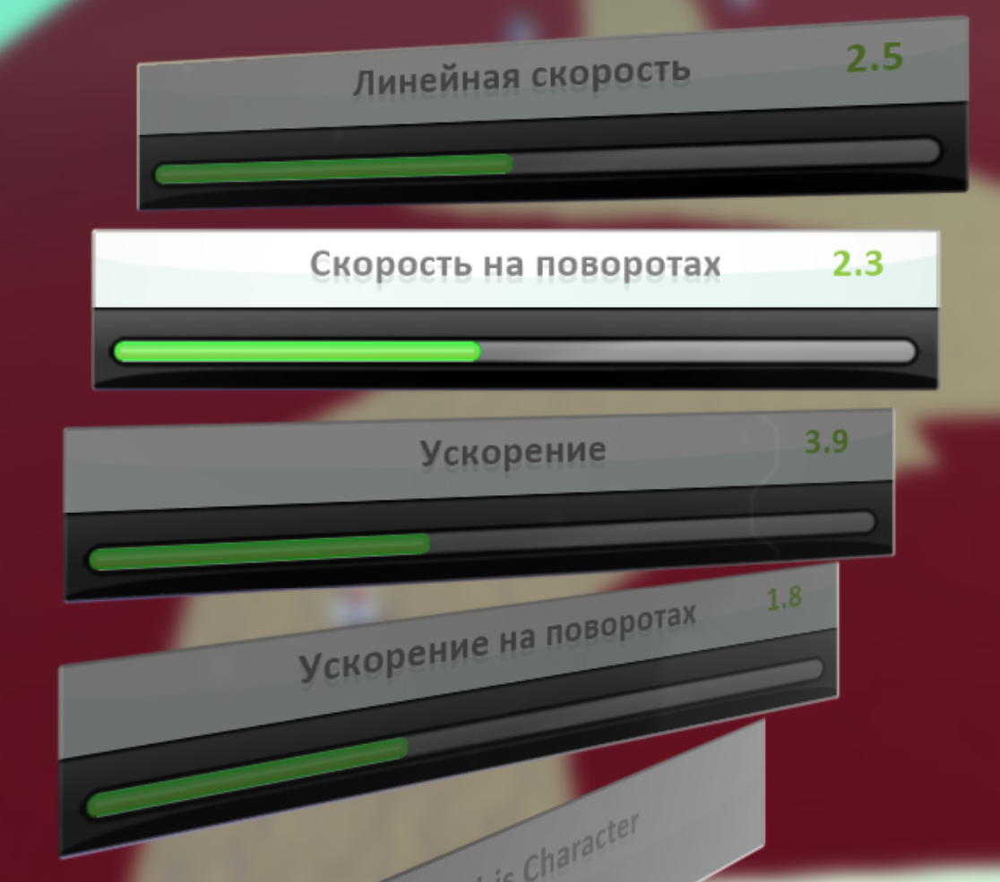
-
не забывай, что можно повернуть объект:
Доказательство выполненного д/з: видео / скриншот игры / устное объяснение, как сделал.
Прошлое д/з (код: М-6)
Программное обеспечение: Kodu Game Lab
Цель: сделать демонстрацию (демо) игры.
Учебная цель: вспомнить, как создавать объекты и их программировать.
Задачи:
- создать ландшафт с пропастями
- создать зверька Kodu
- запрограммировать возможность им управлять и прыгать
- запрограммировать победу
Подсказки:
-
часть программирования для Kodu:
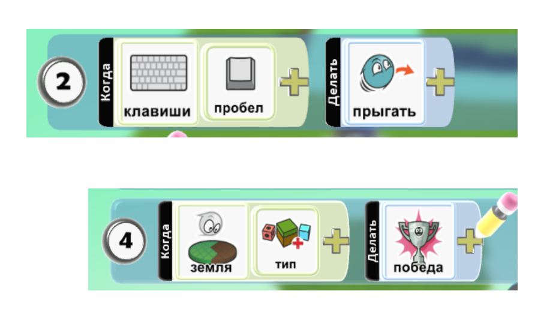
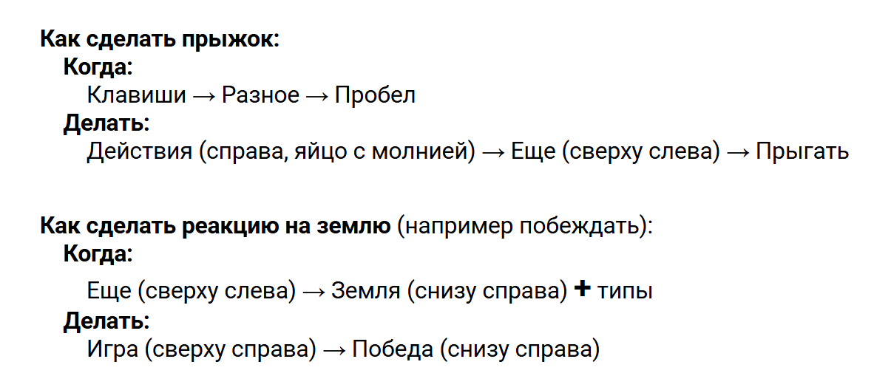
- не забывай, что можно прыгать 2 раза
Доказательство выполненного д/з: видео / скриншот игры / устное объяснение, как сделал.
Прошлое д/з (код: М-4)
Программное обеспечение: Kodu Game Lab
Цель: установить среду игрового программирования Kodu Game Lab.
- Зайди на сайт https://www.kodugamelab.com/downloads/
-
Скачай установщик, нажав на ссылку:
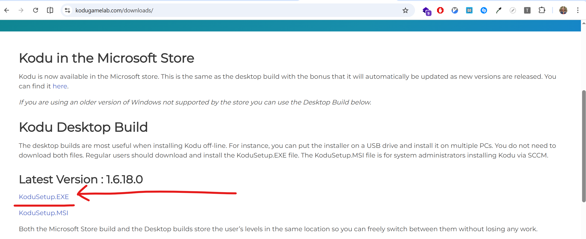
-
Запусти установщик. В браузере обычно справа сверху есть меню с недавно скачанными файлами:
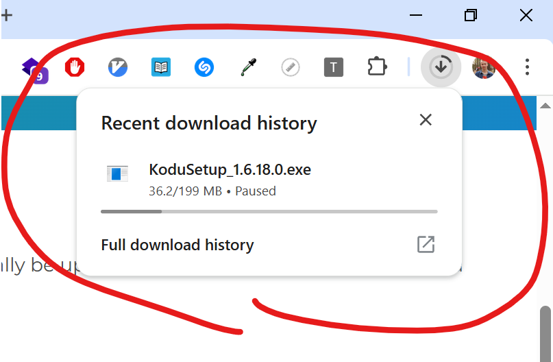
-
Выбери русский язык:
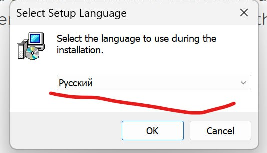
-
Убери галочки в этих местах:
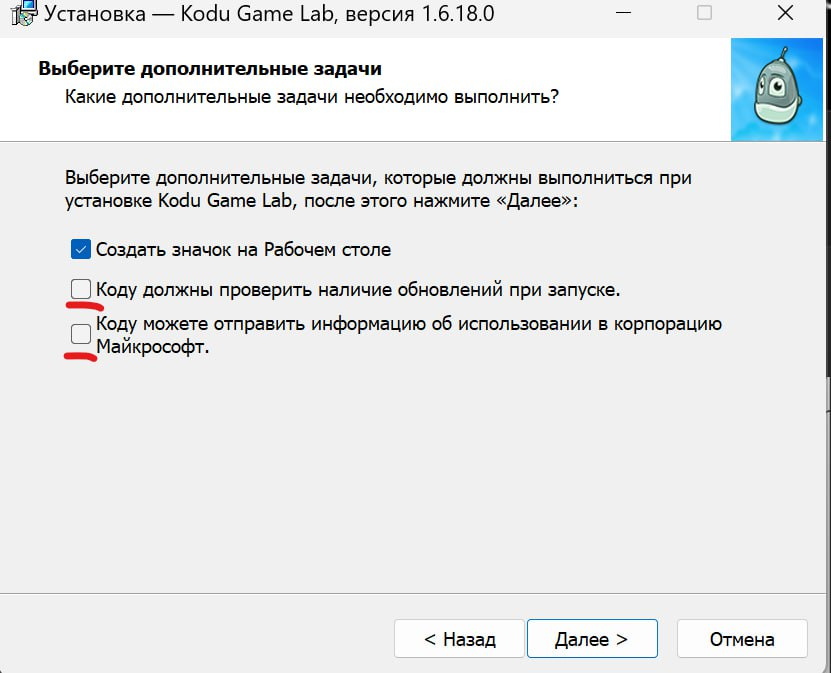
-
Запусти Kodu. Можно это сделать, нажав на клавишу Windows (возле пробела) и набрав "kodu".
Откроется такое окно, здесь рекомендую поставить галочку снизу:
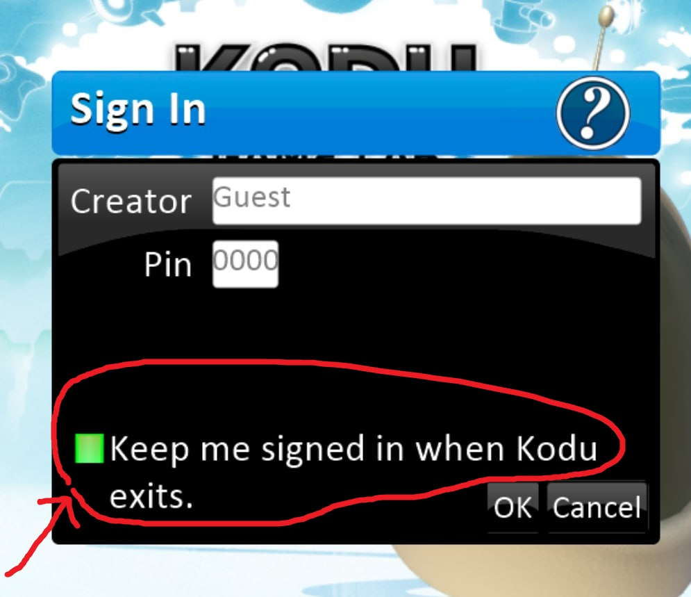
Доказательство выполненного д/з: скриншот запущенной программы / устное объяснение, как сделал.
Прошлое д/з (код: М-3)
Программное обеспечение: Scratch
Цель: сделать игру – "Отбей мяч".
Учебная цель: вспомнить, как работать с [плыть], [выдать случайное], клонами.
Запрограммируй игру согласно видео. Подсказки:
-
Можешь пользоваться шпаргалкой – https://rainlab.by/ko/base/scratch.html.
-
Как главного героя удобно выбрать готовый 16-ый спрайт – Batter; мяч - в поиске введи "ball" и выбери любой.
-
Алгоритм появления мячей:
- Повторять 10 раз:
- создать клон самого себя
- ждать 3 секунды
- в другом скрипте использовать блок [когда я начинаю как клон]
-
Чтобы запрограммировать движение мяча в случайную точку, воспользуйся зелёным блоком [выдать случайное от () до ()].
-
Чтобы запрограммировать движение главного героя, можно воспользоваться этим блоком из секции Сенсоры и выбрать нужную клавишу, например английские буквы w и s:

-
Вместо [когда зел. флаг нажат] удобнее использовать клавишу Пробел.
Доказательство выполненного д/з: скриншот программы (скрипта) главного героя и Мяча / устное объяснение, как сделал.
Прошлое д/з (код: М-2)
Программное обеспечение: Scratch
Цель: сделать игру – "Поймай мяч".
Учебная цель: вспомнить, как работать с движением по x/y и [плыть].
Запрограммируй игру согласно видео. Подсказки:
-
Можешь пользоваться шпаргалкой – https://rainlab.by/ko/base/scratch.html.
-
Как главного героя удобно выбрать готовый второй спрайт – Amon; мяч - в поиске введи "ball" и выбери любой.
-
Чтобы запрограммировать движение мяча в случайную точку, воспользуйся зелёным блоком [выдать случайное от () до ()].
-
Чтобы запрограммировать движение главного героя, можно воспользоваться этим блоком из секции Сенсоры и выбрать нужную клавишу, например английские буквы w и s:
-
Вместо [когда зел. флаг нажат] удобнее использовать клавишу Пробел.
Доказательство выполненного д/з: скриншот программы (скрипта) главного героя и Мяча.
Прошлое д/з (код: М-1)
Программное обеспечение: Scratch
Цель: сделать заклинание для Ученицы – яблочное исчезновение.
Учебная цель: вспомнить, как работать с движением и сообщениями (событиями/сигналами).
Запрограммируй игру согласно видео. Подсказки:
-
Чтобы найти Волшебника и Ученицу, выбери спрайт в самом конце списка:

-
Не забудь отзеркалить Ученицу:

Доказательство выполненного д/з: скриншот программы (скрипта) Яблока.
Прошлое д/з (код: ИФ-8)
Программное обеспечение: Scratch
Цель: сделать игру с элементом случайности – два коня наперегонки добираются до финиша.
Учебная цель: вспомнить, как работать с Игрой и событиями (сигналами).
Запрограммируй игру согласно видео. Подсказки:
- Чтобы найти картинку для Коня, начни вводить на английском слово "Horse".
- Финиш можешь нарисовать сам либо скачать, нажав сюда. Также для красоты рекомендую в объекте Финиш единожды достать и нажать блок из секции "Внешний вид" – "перейти на [задний] слой".
-
Тебе понадобится понятие скорости для каждого коня. Это можно сделать с помощью создания переменной в секции "Переменные".
Также при создании нужно выбрать "Только для этого спрайта".
Если возникают проблемы с переменной "скорость" у другого коня, попробуй у проблемного коня удалить эту переменную и создать заново.
Также обращай внимание, чтобы у каждого коня была своя отдельная скорость, а не общая – нам нужен элемент случайности в игре. - Чтобы сделать скорость случайной, используй блок из секции "Операторы" – "выдать случайное от [] до []".
-
Чтобы проигравший конь останавливался, можно использовать вот такой скрипт:

{kind=link}
Доказательство выполненного д/з: скриншот программы (скрипта) Коня.
Прошлое д/з (код: ИФ-7)
Программное обеспечение: Scratch
Цель: сделать мульфильм – дайвер подплывает к рыбкам, они пугаются и начинают двигаться.
Учебная цель: вспомнить, как работать с Игрой (Мульфильмом) и событиями (сигналами).
Запрограммируй мульфильм согласно видео. Подсказки:
-
Фон можно выбрать справа снизу в панели "Сцена" - нажимаем на панель, потом иконку снизу, потом на увеличительное стекло, и можно выбрать фон "Underwater";
Спрайты (костюмы) объектов ищутся в поиске по словам: Дайвер – "Diver", Рыбка – "Fish". -
Код (блоки) Мульфильма:

-
Вместо блоков цикла и движения шагами можно использовать блок "Плыть", например, так:

Обрати внимание, что в этом блоке можно указывать, к какому объекту плыть, а также плыть в случайном направлении - Если Рыбки возвращаются к Дайверу – ничего страшного – это нормальное поведение программы.
Нажми сюда, чтобы увидеть подсказку-спойлер с полным скриптом Дайвера (жми сюда только если прям совсем не получается):

Доказательство выполненного д/з: скриншот программы (скрипта) Дайвера и какой-нибудь Рыбки
Прошлое д/з (код: ИФ-6)
Программное обеспечение: Scratch
Цель: сделать мульфильм.
Учебная цель: вспомнить, как работать с Игрой и событиями (сигналами).
Запрограммируй мульфильм согласно видео. Подсказки:
- Фон можно выбрать справа снизу в панели "Сцена" - нажимаем на панель, потом иконку снизу, потом на увеличительное стекло, и можно выбрать фон "Blue Sky"
-
Код (блоки) Игры:

- Вместо блока "Говорить" используем блок "Говорить 2 секунды"
-
Медведь:
- вместо блока "идти 10 шагов" используем блок "изменить х на (какое-то число)"
-
чтобы отзеркалить спрайт Медведя, используем вот эту кнопку в интерфейсе "Костюмы":

Доказательство выполненного д/з: скриншот программы (скрипта) Кота и Медведя
Прошлое д/з (код: ИФ-5)
Программное обеспечение: Scratch
Цель: сделать кота, который бегает за указателем мыши.
Учебная цель: вспомнить, как работать с движением.
Запрограммируй:
- ожидание перед запуском программы в 3 секунды
- движение кота за указателем мыши
- чтобы кот говорил "Догнал!", когда дотрагивается до указателя мыши
Доказательство выполненного д/з: скриншот программы (скрипта) кота
Прошлое д/з (код: ИФ-4)
Программное обеспечение: Scratch Jr
Задача: запрограммировать игру.
Учебная цель: повторить работу с блоком "По нажатию".
Вспомни:
- как сделать, чтобы при нажатии на объект что-то происходило
- как сделать, чтобы началась новая сцена
- как написать текст на сцене
Прошлое д/з (код: ИФ-3)
Программное обеспечение: Scratch Jr
Задача: запрограммировать мульфильм.
Учебная цель: повторить работу со сменой сцен.
Вспомни:
- как сделать, чтобы персонажи говорили
- как сделать, чтобы началась новая сцена
- как написать текст на сцене
Прошлое д/з (№ -1)
Программное обеспечение: Scratch Jr
Задача: запрограммировать диалог из двух реплик.
Цель: повторить работу с событиями (сообщениями).
Задачи:
- Вспомни блоки для: столкновения, передачи события (сообщения)
- Добавь двух персонажей на сцену и сделай так, чтобы они заговорили, когда столкнулись
Подсказки:
-
Нажми сюда, если застрял и забыл, как создать событие (сообщение)
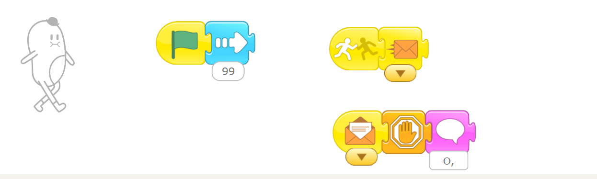
Прошлое д/з (№ -2)
Программное обеспечение: Scratch Jr
Задача: сделать персонажа.
Цель: повторить работу с интерфейсом среды визуального программирования Scratch Jr.
Задачи:
- Вспомни управляющие элементы интерфеса – понажимать на кнопки в сцене и в панели создания персонажа
- Добавь нового персонажа на сцену и отредактируй его (например, разукрась разными цветами). После этого добавь какой-нибудь фон на сцену